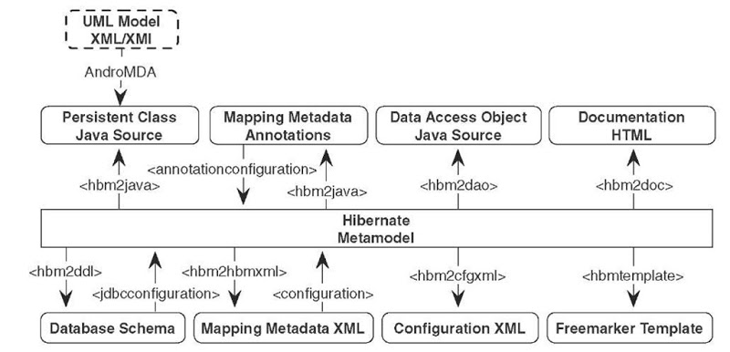

IT Survival
by Capgemini
- GIT
- Spring Framework
- Maven
- Spring Boot
- Architektura wielowarstwowa
- RESTful Services + Controller Advice
- ** Zadania 1 ** ########
- Relacyjne bazy danych a świat obiektowy + ORM
- Mapstruct ########
- Spring Data ########
- Repository ########
- ** Zadania 2 ** ########
- Transakcje
- Testy
- ** Zadania 3 ** ########
GIT
Git
- Rozproszony system kontroli wersji
- Repozytorium gita to dowolny katalog w którym znajduje się podkatalog o nazwie .git
- Repozytorium po stronie serwera niczym nie różni się od repozytorium klienta
- Umożliwia pracę grupie osób na tych samych plikach w tym samym czasie
- Opublikowany na licencji GNU GPL
- Możliwość pracy off-line
git clone
- Kopiuje istniejące repozytorium
- Lokalna kopia jest pełnowartościowym repozytorium
- posiada własną historię plików
- zarządza własnymi plikami
- jest zupełnie odizolowana od oryginalnego repozytorium
- umożliwia pracę offline
git config
- Konfiguruje pojedyncze repozytorium lub ustawienia globalne
- Konfiguruje preferencje użytownika
git config user.name NAME
git config --global user.name NAME
git config --global user.email EMAIL
git config --global credential.helper store
git add
- Dodaje zmieniony w katalogu roboczym plik do obszaru tymczasowego
- Powiadamia git’a, że ma załączyć zmiany danego pliku przy następnym commit’cie
- Nie wpływa znacząco na repozytorium
git add FILE
git add DIRECTORY
git add .
git commit
- Dodaje wcześniej wybrane pliki do historii repozytorium (lokalnego)
- Brak interakcji w centralnym repozytorium (offline)
- Nie wpływa znacząco na repozytorium
git commit -m "MESSAGE"
git push
- Sposób wysłania lokalnych zmian i historii do zdalnego repozytorium
- W przypadku konfliktu zmiany nie zostaną „wypchnięte”
- Udostępnienie/upublicznienie zmian innym
git push REMOTE BRANCH
git fetch
- Import gałęzi (branch) ze zdalnego repozytorium do lokalnego
- Pobrane zmiany nie modyfikują katalogu roboczego
- Możliwość przejrzenia zmian przed ostatecznym merge’m
git fetch REMOTE
git pull
- Działa tak samo jak fetch z tą różnicą, że automatycznie wykonywany jest merge
- Zmiany ze zdalnego repozytorium od razu umieszczane są w lokalnym repozytorium
git pull REMOTE
git branch
- Reprezentuje niezależne zmiany katalogu roboczego
- Komenda pozwala tworzyć, dodawać, zmieniać nazwy i usuwać gałęzie
- Zmiana gałęzi powoduje podmianę plików w bieżącym katalogu roboczym
git branch
git branch -r
git branch BRANCH
git branch -d BRANCH
git checkout (branch)
- Umożliwia nawigację między gałęziami
- Podmienia pliki w bieżącym katalogu
- Zmienia kontekst – nowe commit’y będą przypisane do aktualnej gałęzi
git checkout EXISTING_BRANCH
git checkout -b NEW_BRANCH
Pozostałe komendy
- git init
- git merge
- git status
- git log
- git revert
- git reset
- git stash
Spring
Spring Framework
- Powstał w 2003 roku
- Szkielet tworzenia aplikacji dla języka Java
- Alternatywa dla programowania w EJB
- Oferuje dużą swobodę wytwarzania oprogramowania
- Bardzo dobra dokumentacja
- Gotowa implementacja wielu zagadnień
- Ogromne wsparcie dla Java EE
- Propaguje poprawny styl programowania
- Jest dostępny na zasadach open source
Spring Framework - moduły
- Składa się z kilku niezależnych od siebie modułów
- Moduły można ze sobą łączyć w celu uzyskania większej funkcjonalności

Spring Framework – podstawowy kontener
- Core
- podstawowa część frameworka, zawiera IoC i wstrzykiwanie zależności
- Beans
- eliminuje potrzebę programowego tworzenia singletonów
- oddziela zależność pomiędzy konfiguracją, specyfikacją a logiką programu
Spring Framework – podstawowy kontener
- Context
- umożliwia dostęp do obiektów zarządzanych przez framework
- pozwala na wydzielenie konfiguracji do plików *.properties
- udostępnia interface ApplicationContext
- EL - Spring Expression Language
@Value("#{applicationProperties['jakas.zmienna.z.pliku.properties']}")
private String zmienna;
Inversion of Control, Dependency Injection
- Paradygmat programowania, wzorzec projektowy, wzorzec architektoniczny.
- Zastosowanie
- w pojedynczych komponentach,
- w architekturze całego systemu (Spring Framework)
- W klasycznym podejściu obiekty są budowane statycznie, brak wpływu na ich postać.
- Odwracamy kontrolę – budowaniem obiektów zajmuje się framework
Słyszałem / wygooglowałem że Spring to głównie konfiguracje XMLowe
- Tak było kiedyś, teraz większość podstawowych konstrukcji może bez problemu być konfigurować za pomocą adnotacji
- Konfiguracje poprzez XML cały czas działają
Ale adnotacje w tej prezentacji nie są Interfejsami tylko Springowymi, ale też należącymi do JPA i Hibernate.
Inversion of Control, Dependency Injection
Wstrzykiwanie zależności – dla danego obiektu definiujemy, z jakich innych komponentów będzie korzystał, ale nie musimy się martwić o tworzenie instancji tych obiektów – zrobi to za nas framework, wykorzystywane w Springu.
@Service
public class CustomerServiceImpl {
private final CustomerMapper customerMapper;
private final CustomerDao customerDao;
@Autowired
public CustomerServiceImpl (CustomerMapper mapper, CustomerDao dao) {
this.customerMapper = mapper;
this.customerDao = dao;
}
Jak zacząć ze springiem?
- Podłączyć jary sciągnięte z internetu
-
W internecie poszukać dependency do POMa i podłączyć
-
Sciągnąć kompletny STS (Spring Tool Suite)
-
start.spring.io
Spring framework - podstawy
import org.springframework.boot.SpringApplication;
import org.springframework.boot.autoconfigure.SpringBootApplication;
import org.springframework.data.jpa.repository.config.EnableJpaRepositories;
@SpringBootApplication
public class BooksServerApplication {
public static void main(String[] args) {
SpringApplication.run(BooksServerApplication.class, args);
}
}
Spring framework - adnotacje
- @Component - podstawowa adnotacja, określa że klasa jest zarządzana przez Spring
- @Service - określa klasę zawierającą logikę biznesową
- @Repository - klasy DAO (Data Access Object), bezpośrednia komunikacja z DB
Wszystkie działają i robią to samo
Wyjątkiem jest @Repository, która dodatkowo konwertuje wyjątki dostawców bazy danych
Adnotacje pozwalają oddzielić od siebie różne warstwy aplikacji
Ułatwiają czytanie i analizowanie kodu
Spring framework - adnotacje
- @Controller - przetwarza żądania HTTP
- @Scope - umożliwia zmianę domyślnego czasu życia bean’a
- @PostConstruct - umożliwia wywołanie części kodu zaraz po utworzeniu obiektu
- @RequestMapping - używana w kontrolerze, mapuje adres URL na metodę
Adnotacje - przykład
@RequestMapping("/services")
@RestController
public class BooksRestService {
private final BookService bookService;
@Autowired
public BooksRestService(BookService bookService) {
this.bookService = bookService;
}
@RequestMapping(path = "/books", method = RequestMethod.GET)
public List<BookTo> findBooks(BookSearchCriteria bookSearchCriteria) {
return bookService.findBooks(bookSearchCriteria);
}
}
Maven
Maven
- Cel - Automatyzacja i standaryzacja procesu budowania
- Umożliwia opis procesu budowania oprogramowania
- Pozwala na zdefiniowanie zależności oraz zarządzanie nimi
- Podział na centralne repozytorium artefaktów - search.maven.org
- oraz lokalnie dostępne repozytorium deweloperskie
Struktura projektu - convention over configuration
Konfiguracja projektu - POM (Project Object Model)

Maven build lifecycle
- Zadania wykonywane kaskadowo - wykonanie konkretnego kroku powoduje również wykonanie wszystkich poprzedzających
- mvn compile
- Deweloper najczęściej używa mvn clean install
- Poszczególne pluginy korzystają ze zdefiniownaych faz w celu wykonania własnej akcji, np. mvn surefire:test

Zarządzanie zależnościami - dependency management
- Każda biblioteka posiada unikalny identyfikator - groupId, artifactId, version
- Plik pom.xml zawiera sekcję dependencyManagement z listą zależności
- Zależności są aktualizowane w procesie budowania
- Centralne repozytorium artefaktów - search.maven.org
- Lokalne repozytorium - lokalizacja definiowana dla użytkownika

Spring Boot
Dlaczego Spring Boot?
+ Konfiguracja = Aplikacja startowa
Spring Boot
- Convention over configuration
- Przy zerowej konfiguracji działająca aplikacja
- Prekonfiguracja możliwa dzięki adnotacjom @Conditional...
- Generator projektu - start.spring.io
Spring boot / Startery
- Zestawy zależności udostępniające prekonfigurowane funkcje Springa
- Np. dla aplikacji bazodanowej:
spring-boot-starter-data-jpa - Lista starterów -> spring-boot-starters
- Jak użyc? -> pom.xml
<dependency>
<groupId>org.springframework.boot</groupId>
<artifactId>spring-boot-starter-tomcat</artifactId>
<scope>provided</scope>
</dependency>Deployment aplikacji Spring Boot
- Embedded Server
- Przy użyciu np. startera
jar wynikowy (mvn clean install) zawiera jary Tomcataspring-boot-starter-web - Start klasy aplikacji uruchamia wbudowanego Tomcata (możliwe jest również użycie Jetty)
- Klasyczny serwer J2EE lub zewnętrzny Tomcat Zmiana pliku docelowego na war, niewielkie zmiany w pom.xml
Architektura wielowarstwowa
Architektura wielowarstwowa
Efekt zastosowania SRP (Single Responsibility Principle)| Rola | Nazwa Warstwy | Odpowiedzialność |
|---|---|---|
| Komunikacja FrontEnd | REST Service | tłumaczenie requestów |
| Use Case | Service | logika biznesowa |
| Baza danych | Repository / DAO | persystencja |
Architektura wielowarstwowa
Czym jest Repository:A Repository represents all objects of a certain type as a conceptual set. It acts like a collection, except with more elaborate querying capability.[DDD]
RESTful Services
RESTful Services
REST - REpresentation State Transfer. Roy Fielding 2000.
REST to nie jest architektura, tylko pewien zespół ograniczeń, który jeśli jest zastosowany do architektury to nadaje konkretne role danym, komponentom, hyperlinkom, ...
RESTful Services
Wymagania stawiane przez definicję REST:- system klient - server
- system bezstanowy
- system udostępniający cache*
- system jednolicie dostępny*
- system wielowarstwowy
RESTful - spełniający wszystkie punkty powyższych założeń.
- Dane przesyłane między klientem a serwerem są pewną reprezentacją bytów biznesowych: XML, JSON
- Dane przemieszczają się do konkretnego adresata URI (Uniform Resource Identifier)
- Dane dodatkowo posiadają pewien kwalifikator akcji, mający odpowiednik w świecie protokołu HTTP
| Akcja | Metoda HTTP |
|---|---|
| CREATE | POST |
| RETRIEVE | GET |
| UPDATE | PUT |
| DELETE | DELETE |
RESTful API
@RequestMapping(path = "/cars", method = RequestMethod.GET)
public List<CarTo> findAllCars() { ... }
@RequestMapping(path = "/car", method = RequestMethod.POST)
public CarTo addCar(@RequestBody CarTo car) { ... }
@RequestMapping(path = "/car", method = RequestMethod.PUT)
public CarTo updateCar(@RequestBody CarTo car) { ... }
@RequestMapping(path = "/car/{id}", method = RequestMethod.DELETE)
public boolean deleteCar(@PathVariable("id") Long id) { ... }
Controler Advice
Controler Advice - obsługa wyjątków warstwy serwisowej
@RequestMapping(path = "/car", method = RequestMethod.PUT)
public CarTo updateCar(@RequestBody CarTo car) {
// co jeśli Spring nie dostanie jako argument JSONa poprawnie -
// ale biznesowo poprawnie - tłumaczącego się na CarTo?
}
@Valid
@RequestMapping(path = "/car", method = RequestMethod.PUT)
public CarTo updateCar(@RequestBody @Valid CarTo car) {
// Metoda nie zostanie wywołana jesli walidacje okreslone deklaratywnie w CarTo nie przechodzą
}
CarTo
public class LegoSetTo {
private long id;
@NotNull
@Size(min = 5, max = 200)
private String name;
@NotNull
private Status status;
@NotNull
private Condition condition;
}
Obsługa wyjątku
@RestControllerAdvice
public class CarControllerAdvice {
@ExceptionHandler({ MethodArgumentNotValidException.class })
@ResponseStatus(value = HttpStatus.BAD_REQUEST)
public List<ErrorMessageTo> validationException(MethodArgumentNotValidException ex) {
ErrorMessageTo message = new ErrorMessageTo();
message.setMessage(ex.getLocalizedMessage());
return Lists.newArrayList(message);
}
}
Zadania 1.X
branch:
1.0 *
1.1 **
POSTMAN
1.2 ***
Relacyjne bazy danych a świat obiektowy
Relacyjne bazy danych a świat obiektowy
- Aplikacje tworzą, zarządzają i przechowują informacje strukturalne
- Programiści wybierają języki obiektowe
- Zapisywanie i pobieranie danych wymaga znajomości SQL
Dostęp do danych za pomocą JDBC
- Bardzo dobrze znane API
- Wymaga dobrej znajomości SQL
- Łącze do baz danych dla języka Java

JDBC - jak to działa
@Service public class CustomerServiceImpl {
private static final String FIND_ALL_LIBRARIES_IN_CITY_SQL =
"SELECT l.id, l.name, l.address_id FROM Library l, Address a
WHERE l.address_id = a.id AND a.city = :city";
@Autowired private NamedParameterJdbcOperations jdbcTemplate;
@Autowired private LibraryRowMapper mapper;
public List<LibraryTO> findAllLibrariesInCity (String cityName) {
SqlParameterSource params = new MapSqlParameterSource("city", cityName);
return jdbcTemplate.query(FIND_ALL_LIBRARIES_IN_CITY_SQL, params, mapper);
}
- Konieczność definiowania zapytań SQL
- Spring NamedParameterJdbcOperations do wykonywania instrukcji SQL
- Spring RowMapper do mapowania wyniku zapytania na obiekt
JDBC - spring RowMapper
Implementacja interfejsu RowMapper
@Component
public class LibraryRowMapper implements RowMapper<LibraryTO> {
@Override
public LibraryTO mapRow(ResultSet rs, int rowNum) throws SQLException {
LibraryTO library = new LibraryTO();
library.setId(rs.getLong(1));
library.setName(rs.getString(2));
library.setAddress(mapAddressById(rs.getLong(3)));
return library;
}
private AddressTO mapAddressById(Long addressId) {
if (addressId != null && Long.compare(0, addressId) != 0)
return new AddressTO(addressId));
return null;
}
JDBC - wady
- Wymaga pisania dużej ilości dodatkowego kodu
- Trudne mapowanie wyniku SQL na obiekty biznesowe
- Kod związany z trwałością danych narażony na błędy programistów
- Brak przenośności kodu, implementacja zależna od bazy danych
- Implementacja bardzo trudna w utrzymaniu
- Ewentualne błędy w zapytaniach SQL widoczne dopiero w trakcie działania programu
- Kod nietestowalny
Odwzorowanie obiektowo-relacyjne
Odwzorowanie obiektowo-relacyjne
- Przekształcenie obiektów w encje bazy danych i odwrotnie
- Przekształcenie połączeń między obiektami na relacje bazy danych
- Przekształcenie obiektowego języka zapytań na SQL
- Spójny sposób obsługi różnych baz danych - przenośność
- Zapewnienie trwałości obiektów
- Ochrona programisty przed czasochłonnym SQL-em
- Pozwala skupić się na implementacji logiki biznesowej
- Zapewnienie stałych technik optymalizacyjnych
- Oddzielenie warstwy dostępu do danych od biznesu
Odwzorowanie obiektowo-relacyjne
Niedopasowanie paradygmatów relacyjno-obiektowych| Podobieństwa | Różnice |
|---|---|
| Klasy i tabele | Szczegółowość |
| Właściwości i kolumny | Dziedziczenie (java) |
| Instancje i wiersze | Kolekcje (java) |
| Identyczność (==, equals vs PK) | |
| Nawigacja po grafie obiektów |
Podstawowym zadaniem ORM jest rozwiązanie wrodzonych niezgodności pomiędzy obiektami i bazami danych
HIBERNATE
Hibernate
- Gavin King rozpoczął prace nad biblioteką pod koniec 2001 roku
- Zespół na bieżąco realizował prośby użytkowników
- Zgodny ze standardem JPA**
- Możliwość traktowania Hibernate jako dostawcy trwałości
- Możliwość używania bibliotek JPA, takich jak np. Spring-Data-Jpa
- Oddziela kod biznesowy od warstwy dostepu do danych
Hibernate a development
Hibernate a JPA
- JPA - Java Persistence API
- Hibernate jest implementacją JPA
- Tak długo jak w projekcie używa się Hibernate można z jego adnotacji korzystać zamiennie z adnotacjami JPA
- Jeśli planujemy kiedyś zmienić ORM, to warto ograniczyć się do adnotacji JPA
Encja a POJO
public class LibraryEntity {
private String name;
private String domain;
public LibraryEntity () {
}
public String getName() { return name; }
public void setName(String name) { this.name = name; }
public String getDomain() { return domain; }
public void setDomain(String domain) { this. domain = domain; }
}
Encja a POJO
@Entity
public class LibraryEntity {
@Id
private Long id;
@Column(name = "name", length = 30, nullable = false)
private String name;
@Column(name = "domain", length = 5, nullable = true)
private String domain;
public LibraryEntity () {
}
// getters and setters
}
Adnotacje dla Encji
@Entity
@Table(name = "LIBRARY", schema = "public")
@Access(AccessType.FIELD)
public class LibraryEntity {
@Id
@GeneratedValue(strategy = GenerationType.AUTO)
private Long id;
@Column(name = "name", length = 30, nullable = false)
private String name;
@Lob
@Column(nullable = false)
private String description;
private String city;
@Access(AccessType.PROPERTY)
public String getCity () { ... }
public LibraryEntity () { }
}
Adnotacje dla Encji
- @Entity - oznacza klasę, odzwierciedla tabelę BD
- @Entity(name="…") - nigdy nie używać
- @Access - decyduje gdzie umieszczać adnotacje
- @Table - zmienia domyślną nazwę tabeli BD
- @Id - oznacza atrybut jako klucz główny
- @GeneratedValue - auto generacja wartości PK
- @Column - pozwala ustawić wartości kolumny
- @Lob - typ dla dużych danych tekstowych
- @Enumerated(EnumType.STRING) - enumy
- @Transient - wyłączenie pola z persystencji
- @MappedSuperclas - zwykłe dziedziczenie
Typy Embedded
@Embeddable
public class PersonalData {
private String firstName;
private String lastName;
@Column (columnDefinition=" DATE", nullable = false)
private Date birthDate;
public PersonalData() {
}
// getters & setters
}
Typy Embedded
@Entity
public class AuthorEntity {
@Embedded
@AttributeOverrides({
@AttributeOverride(
name = "firstName",
column = @Column(
name = "FIRST_NAME",
nullable = false)),
@AttributeOverride(
name = "lastName",
column = @Column(
name = "LAST_NAME",
nullable = false))})
vate PersonalData personalData;
...
}
Generowanie kluczy głównych - Strategie
@Id
@GeneratedValue(strategy = GenerationType.AUTO)
private Long id;
@Id
@SequenceGenerator(name = "bookGen", sequenceName = "BOOK_SEQ")
@GeneratedValue(strategy = GenerationType.SEQUENCE,
generator = "bookGen")
private Long id;
Generowanie kluczy głównych - Strategie
@Id
@TableGenerator(
name="bookGen",
table="ID_GEN", // opcjonalnie
pkColumnName="GEN_KEY", // opcjonalnie
valueColumnName="GEN_VALUE", // opcjonalnie
pkColumnValue="BOOK_ID_GEN") // opcjonalnie
@GeneratedValue(strategy = GenerationType.TABLE, generator = "bookGen")
private Long id;
Cykl życia encji
- Adnotacje jako metadane opisujące mapowanie pomiędzy obiektem a bazą
- Cykle życia encji:
- nowy (new) - brak identyfikatora i powiązania z kontekstem persystencji
- zarządzany (managed) – encja posiada ID i jest powiązana z kontekstem persystencji
- odłączony (detached) – encja posiada ID ale nie jest powiązana z kontekstem persystencji
- usunięty (removed) – tak jak zarządzany, ale oznaczona jako „do usunięcia”
Listenery
- @PrePersist
- @PostPersist
- @PreUpdate
- @PostUpdate
- @PostLoad
- @PreRemove
- @PostRemove
Listenery wewnątrz encji
@Entity
@Table(name = "CUSTOMER_CARD")
public class CustomerCardEntity {
@Id
@GeneratedValue(strategy = GenerationType.AUTO)
private Long id;
@Column(nullable = false)
private String serialNumber;
@PrePersist
public void generateDefaultSerialNumber() {
serialNumber = new SerialNumberGenerator().generate();
}
}
Listenery stand alone
@Entity
@Table(name = "CUSTOMER_CARD")
@EntityListeners(CustomerCardListener.class)
public class CustomerCardEntity {
@Id
@GeneratedValue(strategy = GenerationType.AUTO)
private Long id;
@Column(nullable = false)
private String serialNumber;
}
Listenery stand alone
public class CustomerCardListener {
@PrePersist
public void generateDefaultSerialNumber
(CustomerCardEntity customerCardEntity) {
String serialNumber = new SerialNumberGenerator().generate();
customerCardEntity.setSerialNumber(serialNumber);
}
}
Entity Manager
- Podstawowy element całej warstwy persystencji
- Zarządza transakcjami i encjami
String unitName = "MyPersistenceUnit";
// utwórz
EntityManagerFactory emf = Persistence.createEntityManagerFactory(unitName);
EntityManager em = emf.createEntityManager();
// zrób co masz do zrobienia
zrobCos(em);
// zamknij
em.close();
emf.close();
Entity Manager - dostęp do danych
- Podstawowy element całej warstwy persystencji
- Zarządza transakcjami i encjami
// zapis
Product banan = new Product(1, "banan", "owoce");
em.persist(banan);
// odczyt
Product bananFromDB = em.find(Product.class, 1);
// usunięcie
Product bananFromDB = em.find(Product.class, 1);
em.remove(bananFromDB);
// zapytanie
Product product = em.createQuery(
"SELECT p FROM Product p WHERE p.category = :cat_param", Product.class)
.setParameter("cat_param", "owoce")
.getSingleResult();
Relacje
- @OneToOne – encja A może mieć relację do dokładnie jednej encji B
- @OneToMany – encja A może mieć relację do kilku encji B
- @ManyToOne – wiele encji A może mieć relację do dokładnie jednej encji B
- @ManyToMany – wiele encji A może mieć relację do wielu encji B
- Tworzy tabelę asocjacyjną
Relacje
- Wyróżniamy relacje:
- jednokierunkowe
- dwukierunkowe
@OneToOne - jednokierunkowa
@Entity
public class User {
@OneToOne(
cascade = CascadeType.ALL, // default: empty
fetch = FetchType.LAZY, // default: EAGER
optional = false) // default: true
private Address address;
}
@Entity
public class Address {
}
@OneToOne - dwukierunkowa
@Entity
public class User {
@OneToOne
@JoinColumn(name = "ADDRESS_FK")
private Address address;
}
@Entity
public class Address {
@OneToOne(mappedBy = „address”)
private User user;
}
- mappedBy określa właściciela relacji
- użytkownik ma klucz obcy do adresu
- bez mappedBy klucz obcy po obu stronach
@OneToMany / @ManyToOne - jednokierunkowa
@Entity
public class User {
@OneToMany(
cascade = CascadeType.ALL, // default: empty
fetch = FetchType. EAGER) // default: LAZY
@JoinColumn(name = "user_id")
private Collection<Address> addresses;
}
@Entity
public class Address {
}
- bez @JoinColumn utworzona zostanie tabela asocjacyjna
@OneToMany / @ManyToOne - dwukierunkowa
@Entity
public class User {
@OneToMany(mappedBy = "user")
private Collection<Address> addresses;
}
@Entity
public class Address {
@ManyToOne
@JoinColumn(name = "ADDRESS_FK", nullable = false)
private User user;
}
- mappedBy tak samo jak @JoinColumn usuwa tabelę asocjacyjną
@ManyToMany - jednokierunkowa
@Entity
public class User {
@ManyToMany(
cascade = CascadeType.ALL, // default: empty
fetch = FetchType. LAZY) // default: EAGER
@JoinTable(name = "USER_ADDRESS",
joinColumns = {@JoinColumn(
name = "USER_ID",
nullable = false,
updatable = false)},
inverseJoinColumns = {@JoinColumn(
name = "ADDRESS_ID",
nullable = false,
updatable = false)})
private Collection<Address> addresses;
}
@ManyToMany - dwukierunkowa
@Entity
public class Address {
@ManyToMany(mappedBy = "user")
private Collection<User> users;
}
- bez mappedBy dwie tabele asocjacyjne zostaną stworzone
Kaskady
- Entity Manager dokonuje zmian na danej encji, np. persist
- Kaskady umożliwiają operację na encji połączonej relacją
- PERSIST
- MERGE
- REMOVE
- ALL
Kaskady
@Entity
@Table(name = "BOOK")
public class BookEntity {
@OneToOne(cascade = CascadeType.ALL, mappedBy = "book")
private BookSpoilerEntity bookSpoiler;
}
Dziedziczenie
- Naturalna właściwość obiektów
- Nie ma zastosowania w relacyjnych bazach danych
- Rozwiązaniem Hibernate są trzy strategie:
- SINGLE_TABLE
- TABLE_PER_CLASS
- JOINED
- Możliwość wykonywania zapytań polimorficznych
Strategie: Single Table
- Podobne obiekty przechowywane są w jednej tabeli
- Rekordy rozróżniane są przez tzw. Dyskryminator
- Wydajne wyszukiwanie – brak złączeń
- Puste kolumny (różnice między obiektami)
- Problem z warunkiem Not-Null.
Strategie: Single Table
@Entity
@Table(name = "AUTHOR")
@DiscriminatorColumn(name = "TYPE", length = 6,
discriminatorType = DiscriminatorType.STRING)
@Inheritance(strategy = InheritanceType.SINGLE_TABLE)
public abstract class AuthorEntity {
@Id
@GeneratedValue(strategy = GenerationType.AUTO)
protected Long id;
@Column(nullable = true, length = 30)
protected String nickName;
}
Strategie: Single Table
@Entity
@DiscriminatorValue("WRITER")
public class WriterEntity extends AuthorEntity {
@Enumerated(EnumType.STRING)
private LiteraryGenre literaryGenre;
}
Strategie: Single Table
@Entity
@DiscriminatorValue("PROFES")
public class ProfessorEntity extends AuthorEntity {
@Column(nullable = true)
private String university;
}
Strategie: Single Table
Strategie: Table per class
- Oddzielna tabela bazy danych na jedną encję
- Brak porblemów z warunkami Not-Null
- Redundancja wspólnych atrybótów
- Niewydajne zapytania SQL przy zapytaniach polimorficznych
Strategie: Joined
- Bazowe obiekty zapisane są w jednej tabeli
- Różnice między obiektami zapisywane są w oddzielnych tabelach
- Znormalizowana baza danych
- Brak redundancji
- Wymagane złączenie tabel przy zapytaniach polimorficznych
Strategie: Joined
@Entity
@Table(name = "BOOK_EXEMPLAR")
@Inheritance(strategy = InheritanceType.JOINED)
public abstract class BookExemplarEntity {
@Id
@GeneratedValue(strategy = GenerationType.AUTO)
protected Long id;
@Column(nullable = false, length = 15, unique = true)
protected String serialNumber;
}
Strategie: Joined
@Entity
@Table(name = "PAPER_BOOK")
@PrimaryKeyJoinColumn(name = "book_ex_id", referencedColumnName = "id")
public class PaperBookExemplarEntity extends BookExemplarEntity {
private int pagesCount;
@Enumerated(EnumType.STRING)
@Column(nullable = false)
private PaperSize paperSize;
@Enumerated(EnumType.STRING)
@Column(nullable = false)
private BookCover bookCover;
}
Mapstruct
Po co mapowanie?
- Encja-TransportObject
- Izolacja warstwy danych od całej reszty
- TransportObject-TransportObject
- Tłumaczenie danych na różne interfejsy
Jak można mapować
- ręcznie (unikać)
- automatyczne
- z wzkorzystaniem refleksji (Dozer, ...)
- z wzkorzystaniem generowania bajtkodu (Orika, ...)
- z wzkorzystaniem generowania kodu (Mapstruct, ...)
Mapstruct - proste atrybuty różniące się nazwą
@Mappings({
@Mapping(source = "orders", target = "orderItems"),
@Mapping(source = "customerName", target = "name")
})
Customer toCustomer(CustomerDto customerDto);
Mapstruct - złożone obiekty
@Mappings({
@Mapping(target = "fish.kind", source = "fish.type"),
@Mapping(target = "fish.name", ignore = true),
@Mapping(target = "ornament", source = "interior.ornament"),
@Mapping(target = "material.materialType", source = "material"),
@Mapping(target = "quality.report.organisation.name", source = "quality.report.organisationName")
})
FishTankDto map(FishTank source);
Mapstruct - trudniejsze mapowania
- mapowanie z kolekcjami
- mapowanie z zapętlonymi obiektami
- mapowanie z zaokrągleniami wartości
- mapowanie obiektów nie przestrzegających konwencji get-set
Spring Data
Repository
Zadania 2.X
branch:
2.0 *
2.1 *
2.2 **
Transakcje
Transakcje
- Zbiór operacji na bazie danych stanowiących jedną całość
- Zmieniają spójny stan bazy danych w inny spójny stan
- Cechy transakcji:
- Atomowość (Atomicity)
- Spójność (Consistency)
- Izolacja (Isoation)
- Trwałość (Durability)
Transakcje - Entity Manager
// rozpoczyna transakcję
em.getTransaction().begin();
// wykonanie operacji
Product prodFromDb = em.find(Product.class, 1);
prodFromDb.setCategory("newCategory");
// zatwierdzenie transakcji
em.getTransaction().commit();
// ewentualne wycofanie transakcji
em.getTransaction().rollback();
- Najlepszy sposób budowania transakcyjnych aplikacji Spring
- Brak powielonego kodu
- Bardzo łatwa konfiguracja
- Propagacja, izolacja, timeout, readOnly, rollbackFor itp.
- Możliwość zdefiniowania na całej klasie i metodzie
@Transactional
@Service
@Transactional(readOnly = true)
public class LibraryServiceImpl implements LibraryService {
@Autowired
private LibraryRepository libraryRepository;
@Autowired
private MapperFacade mapper;
@Override
public List<LibraryTO> findAllLibraries () {
List<LibraryEntity> libraries = libraryRepository.findAll();
return mapper.mapAsList(libraries, LibraryTO.class);
}
}
Testy
Po co testy?
Jakie testy warto tworzyć
- Jednostkowe
- Integracyjne
- Komponentowe
- E2E
- Akceptacyjne
Jakie narzędzia wykorzystywać przy tworzeniu testów
- Mockowanie zależności
- Asercje
- given-when-then
- Continuous Integration
- Argument Captors
- ...
Test Jednostkowy z wykorzystaniem MockMVC
@EnableWebMvc
@ComponentScan("org.itsurvival.books.rest")
public static class BooksRestServiceTestConfiguration {
@Bean
public BookService bookService() {
return Mockito.mock(BookService.class);
}
}
private MockMvc mockMvc;
@Autowired
private WebApplicationContext webApplicationContext;
@Autowired
private BookService bookService;
@Captor
private ArgumentCaptor<BookSearchCriteria> bookSearchCriteriaCaptor;
@Captor
private ArgumentCaptor<BookTo> bookCaptor;
@Test
public void shouldAddNewBook() throws Exception {
// given
byte[] content = readFileToBytes(
"classpath:org/itsurvival/books/rest/newBook.json");
when(bookService.addBook(any(BookTo.class)))
.thenAnswer(args -> args.getArguments()[0]);
// when
mockMvc.perform(post("/services/book")
.content(content)
.contentType(MediaType.APPLICATION_JSON))
// then
.andExpect(status().isOk())
.andExpect(jsonPath("$.title", is("Test title")));
verify(bookService).addBook(bookCaptor.capture());
BookTo book = bookCaptor.getValue();
assertThat(book.getTitle()).isEqualTo("Test title");
assertThat(book.getAuthor()).isEqualTo("Test author");
assertThat(book.getYear()).isEqualTo(2008);
assertThat(book.getGenre()).isEqualTo(Genre.IT);
assertThat(book.getVersion()).isEqualTo(0L);
assertThat(book.getId()).isNull();
}